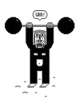

If you are reading this, the mirrors are working.
--
Any thought that I have right now
isn't worth a shit because I'm totally
fucked up.
Loading Mercury With A Pitchfork, Richard Brautigan
--
Jours Étranges (+)
October:
--
Reading list:
--
I spend a lot of time thinking aboutRichard Feynman and Georges Perec. West with the Wind. The Neistat Brothers. Whales and The Royal Tenenbaums. Chashu ramen and Olimpia Zagnoli. 826. Doodling and this American Life and Radiolab and that sound you do with your lips sometimes. Oulipo and Carrot-Orange-Ginger juices. 13 Assassins. Paul Rand and reading in the park (and Junot Díaz). A supposedly fun thing I'll never do again. Sam Vanallemeersch and Calvin and Hobbes. And Ted Chiang's short stories and Michael Caine. Richard Williams, Michael DeForge, feminism, McSweeney's, Puño and Kurt Vonnegut. Jiro Dreams of Sushi, Atlas of Remote Islands and Alexandre Desplat. Spoon, Tom Gauld and Fee Reega (<3) Adventure Time and the School for Poetic Computation. Peter Mendelsund, 'La prose du Transsibérien et de la Petite Jehanne de France' and kissing. Unknown Mortal Orchestra, De Hortus Botanicus and taking pictures (instagram → @javier). Luke Pearson and Paul Erdős and Foxygen and The Eames. Hark, a vagrant and NOBROW. Fudegokochis, Sushi and the Little Printer. POSTALCO, Team Society League and books and the future of books (and also more books). Pixel illustration and Kiga Koyata and Jacques Henri Lartigue and Yasutaka Tsutsui. Ryohei Yanagihara, Punch-Drunk Love and the Codex Seraphinianus and There Will Be Blood and Jonathan Glazer movies and long lists of… things.
--
Sociedad Secreta ShandyAparte de exigirse un alto grado de locura, quedaron fijados los otros dos requisitos indispensables para pertenecer a esa sociedad: junto a que la obra de uno no fuera pesada y cupiera fácilmente en un maletín, la otra condición indispensable sería la de funcionar como una máquina soltera.
Aunque no indispensables, se recomendaba también poseer ciertos rasgos que eran considerados como típicamente shandys: espíritu innovador, sexualidad extrema, ausencia de grandes propósitos, nomadismo infatigable, tensa convivencia con la figura del doble, simpatía por la negritud, cultivar el arte de la insolencia.
Enrique Vila-Matas, Historia Abreviada De La Literatura Portátil
--
Always sprinkle pepper in your hair
Always sprinkle pepper in your hair,
Always sprinkle pepper in your hair.
For then if you are kidnapped by a Wild Barbazzoop,
Who sells you to a Ragged Hag
Who wants you for her soup,
She'll pick you up and sniff you,
And then she'll sneeze "Achooo,"
And say, "My tot, you're much too hot,
I fear you'll never do."
And with a shout she'll throw you out,
And you'll run away from there,
And soon you will be safe at home a-sittin' in your chair,
If you always, always, always,
Always, always, always, always,
Always, always sprinkle pepper in your hair.
Shel Silverstein
--
…Then, about five years ago, a friend of mine moved here from Kelowna, British Columbia. She said, You know, in Toronto, friendships are all based around talking. What you do with your friends is you go out for coffee or drinks, or you go to their apartment and you talk about stuff. In Kelowna, what you do with your friends is go swimming. It seemed really beautiful to me that in Kelowna your friends might just be these people who liked floating around in the water with you—that the people floating near you are your friends.
The Chairs Are Where the People Go, Misha Glouberman & Sheila Heti
This ~ was updated on 2014-10-07 11:26 from Madrid by @javier.